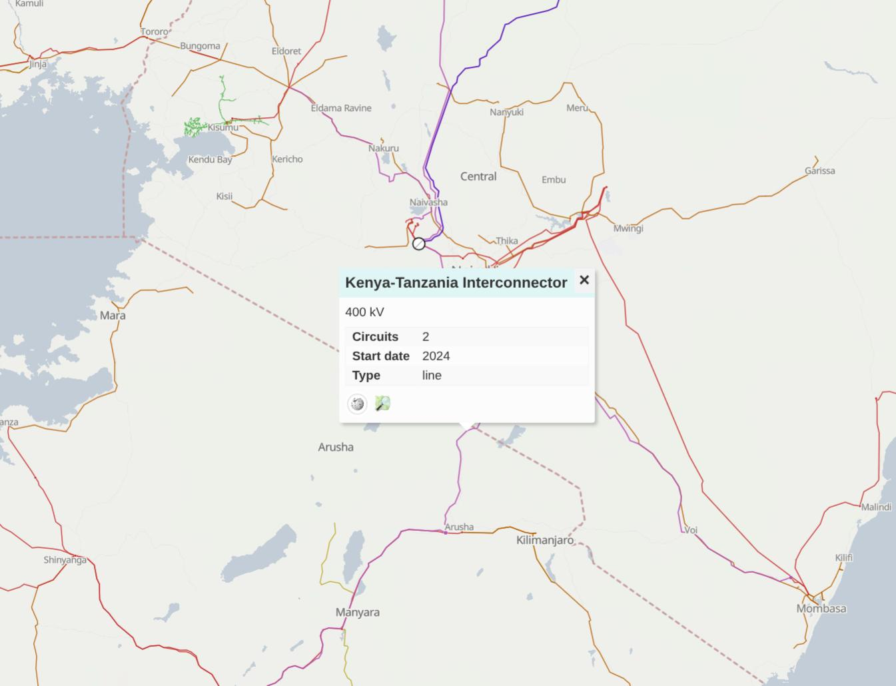

Tools and Strategies
Using the right tools and strategies is fundamental to mapping the electrical grid efficiently and accurately. The following strategies and tools will help you to extend existing transmission grid networks on OpenStreetMap.
As a rule of thumb: The larger the towers and substations, the higher the voltage and the greater their relevance to the transmission grid. Priority should therefore be given to large, high-voltage infrastructure first.
Please consider the following strategies and the associated processes as recommendations only. Ultimately, the most efficient strategy is the one that enables you to work on the electrical grid with passion and motivation over a longer period of time. The strategies can be divided into two phases, with a quality assurance and validation process running alongside them.
Pioneer Mapping Strategies: To ensure the power grid has the best possible coverage, we recommend beginning with Pioneer Mapping in each country. Several strategies are employed at this stage to identify the location of all lines, power poles, and substations. Rather than reducing issues in the grid, the main focus is on increasing extending geographic coverage of the grid. This may result in an increased total number of issues in the grid. These strategies focus primarily on mapping the geographical location of power lines, towers, plants and substations, rather than technical grid details. They require good eyesight, fast mapping skills and an understanding of situations in which satellite data is insufficient for consistent grid mapping.
Technical Mapping Strategies: This phase involves solving complex grid issues that require a fundamental understanding of the electrical grid. This includes mapping voltages, the number of circuits and routing issues. During this phase, the initial mapping work is validated against multiple sources to ensure its plausibility. These sources could include official maps from grid operators, statistics about grid length, and other official data. The main focus of these strategies is to minimise the number of complex quality issues in the grid.
Quality Assurance and Validation: Quality assurance runs parallel to both mapping phases and ensures that all data is verifiable, follows agreed tagging standards, is traceable, and can be reviewed by others. Tools like JOSM, Osmose, ohsome stats, and Open Infrastructure Map, along with community feedback and AI-assisted checks, help maintain the accuracy and reliability of the electrical grid data on OpenStreetMap.
Pioneer Mapping Strategies and Tools
Todo Plugin 
The Todo plugin is used for almost all pioneer mapping strategies, systematically stepping through a dataset of hints.

- Download any hint data layer into JOSM, or select other OpenStreetMap objects that you have filtered with
CTRL+F. - Download the Todo plugin for JOSM.
Edit → Preferences. Search for Todo, mark it and press OK. PressWindows → Todo listto show the Todo list window. - Press CTRL + A to select all objects in the hint layer. Press the Add in the Todo plugin window (
Windows → Todo list) - Switch back to the OSM data layer.
- You can now systematically step through all the hints by pressing Mark.
Map Fast
{kind=link}
To map efficiently and quickly, you need to know how to select all the nodes along your new line and convert them into power towers in one go. This will save you loads of time:
- Enable Expert Mode by selecting the View drop-down menu in the top panel.
- Press
Aand draw nodes as you follow the towers. This will create a long line of untagged nodes, all connected by a untagged way. - Click on the way, and tag it as a power line.
- Click on the way again, and
CTRL+Fto open up search. Then enter this search string:child selected type:node AND untagged. This will select all untagged nodes of the way. - Use the preset power tower or poles to set all nodes at once.
- If you ever lose this query, click the right arrow on the search window and select it from your history.
Copy Coordinates from and into JOSM
There are many reasons why you might want to share your location with someone else. Many popular mapping platforms allow you to copy coordinates from a map by right-clicking on an arbitrary position.
- To copy coordinates from a node in JOSM, simply select the node and press CTRL+SHIFT+C.
- To create a node from a given coordinate, press SHIFT+D or click the Add Node button in the Tools drop-down window. It is recommended that you add this button to your upper toolbar.
Continue Open Lines
Continue Open Lines is the most efficient and most beginner friendly strategy. It is directly integrated in Map Itüìç. The strategy mainly depends on osmose, a quality assurance tool that detects issues in OpenStreetMap data on a daily basis. These include different power classes of issues, such as "unfinished power transmission lines" :
- Select
Unfinished power transmission line (Class 2) (recommended for beginners ⭐)from the drop-down menu, then click on the country or state you wish to map. - Now drag and drop the GeoJSON file you have just downloaded into you JOSM window.
- Press
CTRL+Ato select all the location you have selected and pressAddin the window of the Todo list plugin. - Click on
Default Transmission (90 kV+)in theTransmission Overpass Queryselected and download the tranmission grid data into another layer in JOSM. Activate this layer. - You can now step through all issues by pressing
Mark.
Spot the Gaps in the Grid
{kind=link}
Spot the gaps in the grid is a rather simple strategy but highly efficient. By using a bolt map coloring that highlights gaps in the grid and unconnected substation, is it easy to spot where are gaps in the grid. Unlike the 'Continue Open Lines' strategy, this approach is more flexible and relies on human judgement to address obvious topological issues in the grid. This allows us to prioritise lines extending or connecting new regions of the grid lines with topological relevance, in other words.
As most transmission lines end at substations, the map painting technique allows us to mark the quiet lines that do not end at a substation with a circle. Zooming out allows the mapper to familiarise themselves with the gaps and nationwide coverage of the grid. If you haven't yet added our mapCSS to color the grid, you can find the recommended low-density grids map painting for this strategy here here.
- We recommend using this MapCSS file for low-density grids and this one for high-density grids.
- You can use ColorMyGrid, our MapCSS Generator tool, to easily adapt the MapCSS file to fit any special requirements you might have.
- In the ColorMyGrid repo you will also find the raw data to edit the map legend.
{kind=link}
Connect Power Plants
As most large power plants are directly connected to the transmission grid, Connect Power Plants provides an easy strategy using the comprehensive power plants dataset from Global Energy Monitor. A simple user interface for retrieving this data at a national level is integrated into Map Itüìç, enabling users to preview and download GeoJSON data:

- Select 'Global Energy Monitor - Power Plants' as the hint layer and press the country you like to map.
- Drag and drop the GeoJSON file you have just downloaded into your JOSM window.
- Press
CTRL+Ato select all locations and click Add in the Todo List plugin window. - Click on
Default Transmission (90 kV+)in theTransmission Overpass Queryselected and download the transmission grid data into another layer in JOSM. Activate this layer. - You can now step through all the issues by pressing 'Mark'.
- If you find a power plant that is missing in OpenStreetMap, please map it too.
Connect Substations

A simple yet efficient strategy for mapping the transmission grid is to check every substation for new lines branching out from it. As most national transmission grids are entirely connected, this strategy enables you to trace and therefore map the entire grid network. One single unmapped power tower can sometimes trace to a missing interconnector to another country as shown in the image of a substation in Malawi. Can you see the power tower that's missing from the bottom Left corner?
- Download the transmission grid data of your country using the Map Itüìç page.
- Press CTRL+F and filter by
type:way power=substation. - With the installed Todo plugin window press
Add. - Switch back to your transmission grid layer.
- You can now step through all substations by pressing
Mark.
Connect Industrial Areas
{kind=link}
Large industrial facilities require huge amounts of energy and therefore have their own substations, and are sometimes even directly connected to the transmission grid. Stepping through all industrial areas can also reveal substations or power plants that are often tagged already as landuse=industrial. Try also to check the surrounding area too as substations are sometimes placed outside of the mapped industrial area.
- Download the transmission grid data of your country using the Map Itüìç page.
- Download the industrial areas of your country using into a new layer using the Map Itüìç page.
- Press CTRL+F and filter by
type:way landuse=industrial. - With the installed Todo plugin window press
Add. - Switch back to your transmission grid layer.
- You can now step trouth all substations by pressing
Mark.
For more highly industrialised countries, loading all industries from OSM can sometimes lead to an overwhelming amount of information. When this happens, it can be convenient to filter out smaller industries that may not offer useful insights. To do this, we have the osm-industries tool. This script allows you to create a layer of filtered industries that you can load into JOSM as a GeoJSON file. The script also lets you specify your own threshold value for filtering, with the default set to 10,000 sqm (1 hectare).
Connect WikiData

WikiData provides access to Wikipedia articles about power infrastructure around the world. The Map Itüìç page provides you a simple interface to extract this data for the country you would like to map. The osm-wikidata-comparison repository provides this data by identify missing or incomplete power infrastructure in OpenStreetMap by extracting structured data via the Wikidata API. It generates ready-to-use GeoJSON that can be opened in JOSM as a visual hint layer to guide new mapping work or improve existing tags.
- Use the Map Itüìç page to download the transmission grid data for your country.
- Download your country's WikiData into a new layer using the Map Itüìç page.
- Press CTRL+A and click 'Add' in the 'Todo' window.
- Switch back to your transmission grid layer.
- You can now step through all WikiData entries by pressing 'Mark'.
- If you spot any power plants or industrial areas missing, please also include these in your mapping.

Linking OpenStreetMap to WikiData
Linking other datasets to OpenStreetMap objects, such as power plants, can significantly enrich the data and help to avoid licence issues. Often, other data catalogues provide more up-to-date information about objects than OpenStreetMap. WikiData provides an excellent means of linking all these different data sources together in a standardised way. The datasets we provide will also include the WikiData QID. Adding these QIDs to OpenStreetMap objects greatly improves the quality and usability of data relating to power plants, substations, and interconnectors.
Technical Mapping Strategies
Official Data and Maps
In order to map more effectively, it is recommended to use maps and datasets that can help you find missing power lines, substations and power plants. Most National transmission system operators provide publicly available maps, which can help you to estimate the coverage of the grid, and locate what is missing in OSM. Furthermore, having the names of substations can also help locate them. MapYourGrid provides a list of Curated Grid Maps, which contains datasets, maps, and documents for electrical grid all around the world.

OpenData Plugin
The OpenData plugin will allow you to load all kinds of GIS formats directly into JOSM.
- Download the
OpenDataplugin for JOSM. Go to Edit > Preferences. Search forOpenData, select it and press OK. - You should now be able to import much more data formats like (csv, xls, ods, kml, kmz, shp, mif) as another hint layer into JOSM.
OpenStreetMap and Verifiability
⚠️ Please use these datasets as hint layers. Do not copy and paste data from these maps directly into OpenStreetMap. Each data point of the transmission network must be set manually and verified with official satellite data provided by the OpenStreetMap community.
Searching and solving fixme tags
OpenStreetMap allows mappers to quickly mark an object that seems to be wrong and needs fixing using the Key:fixme tag. For example, you can write fixme=wrong voltage if you think the voltage on a line is incorrect, but you don't know the correct value. A small F will then be visible on the edge of the symbol to indicate the fixme tag. Stepping through all the fixme tags in a country is also a great way to search for errors in the grid that you can try to fix. We recommend using the Todo plugin for this.

- Download the grid you want to look into using at the Map Itüìç page.
- Press
CTRL+Fand search forfixme=*. - In the Todo list window press
Add. - After you fixed and issues please remove the fixme tag.
Open Infrastructure Map - Nighttime Lights and Osmose

- Open Infrastructure Map can be used as a tool to map and find issues by utilising the nighttime lights feature.
- Go to the website and set the background to nighttime lights. This can help see clear "holes" in a country's grid.
- In layers, activate the power validation feature. If you zoom in and find an unfinished power line, you can see the osmose issue affiliated to this line.
Online Investigation 
Searching for recent news articles, reports, academic studies or datasets related to newly operational substations and transmission lines is an effective way to find information about large-scale infrastructure projects that have just started construction or operation. As these facilities are of national interest, they are usually reported on in local news portals or on the websites of transmission grid operators. This is why there is so much news, articles and reports about new, large-scale substations, transmission lines and power plants starting operation.
{kind=link}
Local Large Language Models (LLMs) can help by conducting searches in the country’s official language. For example: “Please search for news articles, reports, academic studies, or datasets about transmission lines or substations opened in Country A in the last 5 years. Use the official language of the country A. Only include resources not already listed in the Awesome Electric Grid Mapping repository.”
Please be aware of the licence and quality of the documents you are finding. If you cannot validate the information you find by different sources, you can at least use the names of substations, regions and towns to identify the locations of new substations or transmission lines, and verify their visibility in satellite images. The fastest way to search global power infrastructure like power plants, substations or country interconnector by name is by the search function of Open Infrastructure Map.
JOSM PowerNetworkTools Plugin üîå
This tool estimates the voltage of a substation busbar from aerial imagery by measuring the clearance between conductors. The clearance is dictated by the voltage and so allows an estimate of the voltage to be made. Although not a perfect method, when combined with knowledge of a country's standard power grid voltages and power infrastructure layout this can greatly assist mappers in assigning voltages to power infrastructure from aerial imagery.
{kind=link}
- Download the
PowerNetworkToolsplugin for JOSM. Go to Edit > Preferences. Search forPowerNetworkTools, select it and press OK. - Activate the Volage Estimator in the
Windowsmenu. - Press V to measure the distance between the two phases at the busbar.
- Read more about how to use the plugin in the README of the official repository.
Validating and Mapping Interconnectors üì•
Interconnectors between countries are essential to the functioning of the transmission grid. Therefore, these lines should be regularly validated and carefully extended. If you are mapping an interconnector between two countries and want to see what’s mapped on the “other” side of the border, you can either do a quick Download from OSM in a new layer or use the following Overpass query:

- Copy this query and paste it into “Download from Overpass API” in JOSM.
- Draw a small bounding box in the slippy map, then run the query to download.
Explanation: The query finds nodes in your bounding box, detects their admin area (level 4 by default), and fetches all power infrastructure within it. You can adjust the “admin level” in the query (e.g. level 2 for national, level 6 for province) by editing the
admin_levelparameter in the download tab. A smaller bounding box is better (faster execution).
Improve OSM tags with PPM
Powerplantmatching (PPM) is a python repository designed to harmonize and combine power plant datasets from sources like OpenStreetMap (OSM) and Global Energy Monitor. It is widely used to prepare validated generation data for energy system models such as PyPSA-EUR. A new feature now fetches power plant data from OSM and flags all power plants and generators that are rejected due to incomplete or inconsistent metadata. These include elements missing a name, output:electrical, plant:method, incorrect unit formats, among others.
{kind=link}
You can access this data through our Map Itüìç interface. Select the powerplantmatching button and click on any country to download a GeoJSON file listing rejected power plants. Once downloaded, the file can be opened in JOSM as a hint layer to help improve tagging. You can do this by reviewing the reason why the power plant was not considered and adding the missing data. For example, a common reason is the lack of a technology tag like plant:method=run-of-river or plant:method=reservoir on hydro power plants, or plant:method=wind_turbine on wind farms relations.
Follow the steps below to help improve rejected power plants in OSM:
- Use the Map Itüìç page to download the rejected power plant layer for a given country.
- Open the GeoJSON file in JOSM as a new layer.
- Press CTRL+A and click 'Add' in the 'Todo' window.
- Switch to your OSM transmission or power layer.
- Step through the rejected entries by pressing 'Mark' in JOSM.
- Improve tagging to enhance the quality of OSM data.
Quality Assurance and Validation
When properly curated and validated, crowdsourced geographic data can rival the quality of highly automated datasets. MapYourGrid builds on this community foundation to ensure the highest quality standards for mapping global electrical infrastructure.
MapYourGrid's validation approach is based on the verifiability principles of OpenStreetMap:
"At the core, "verifiability" is that everything you do can be demonstrated to be true or false by other mappers."
This principle applies to every aspect of mapping: the physical presence of infrastructure, the accuracy of geometries, and the clarity of tags and values. A tag and geometry are considered verifiable only if another mapper, with the same inputs, would record them identically. This objective, evidence-based method is what makes OpenStreetMap a trusted source for academic research, governmental planning, and industrial analysis.
MapYourGrid layers additional tools, methodologies, and community-driven feedback mechanisms on top of this foundation to ensure data accuracy, completeness, and reliability. Here's how we do it:
-
Professional Training, Standards and Support in Electrical Grid Mapping
The MapYourGrid initiative recognizes that high-quality data begins with knowledgeable contributors. We invest in building mapper capacity through structured training, professional-grade documentation, and standards aligned with both OpenStreetMap norms and the energy sector’s expectations. We support decentralized data stewardship by empowering local mappers to guide regional efforts, ensuring that data remains both accurate and contextually relevant over time.
-
User Feedback and Crowdsourced Issue Reporting
We encourage anyone using Open Infrastructure Map to report issues using the #MapYourGrid hashtag. Notes can be added without an account, lowering the barrier to participation. These community-sourced observations help identify outdated, misclassified, or missing infrastructure. This is making user feedback a cornerstone of validation.
-
Pre-Upload Error Detection with JOSM Validator
Before data is uploaded to OpenStreetMap, it is automatically scanned using the JOSM Validator. This tool checks for common mapping errors such as: Illogical tag combinations, Unusual geometries (e.g., excessively long spans between power towers) or incomplete or deprecated data.
Warnings are prominently flagged, and mappers are discouraged from uploading until they are resolved, promoting a high standard of data hygiene.
-
Visual Quality Checks with Custom Map Styles
Custom map painting styles specific to power infrastructure make it easier to spot errors visually within JOSM. These styles highlight anomalies, such as disconnected segments or misclassified equipment, empowering mappers to perform visual audits in real time.
-
Human-in-the-Loop Review Option
By enabling the “I would like someone to review my edits” option in JOSM, contributors can request peer validation. The #mapyourgrid hashtag allows us to track these submissions and offer direct support, especially for:
- New contributors working through tutorials
- Edits based on unclear or low-resolution satellite imagery
These reviews can involve experienced mappers or electrical grid specialists, offering both technical accuracy and mentoring.
-
Daily Automated Quality Assurance via Osmose
The Osmose QA platform runs automated checks daily on the global grid data, focusing on:
- Inconsistent voltage tagging
- Isolated or unconnected transmission lines
- Redundant or deprecated tagging
These issues are visualized directly in Open Infrastructure Map, giving mappers clear targets for improving the dataset.
Special care is taken to validate and investigate interconnectors between different countries like the Kenya-Tanzania interconnector.
-
Statistical Monitoring with Health Scores (Under Construction)
Tools like ohsome stats provide macro-level insights into mapping activity. They help detect:
- Under-mapped regions or infrastructure gaps by comparing national line length statistics with OpenStreetMap
- Unusual tagging patterns or mapping anomalies
- Inactive areas with aging or outdated grid data
Hashtag based tracking also enables performance monitoring and campaign evaluation across time and geography. All this statistical data, along with the osmose issues, is used to calculate a health score for the electrical grid.
-
Integration and Interoperability Tests (Under Construction)
We routinely test how well OSM electrical data integrates with external systems and applications. This ensures that the data model is not only internally consistent but also compatible with real-world use cases, including load flow analysis, planning tools, and emergency response platforms. We test the dataset against other open and proprietary energy system models and frameworks to verify structural and semantic compatibility. Interoperability ensures that OSM-based grid data can be adopted widely, fostering trust among academic and industrial users.
-
Sensitivity Analysis (Under Construction)
By simulating changes in voltage, topology, or component tagging, we measure how sensitive derived outputs (e.g., load estimations or reliability models) are to input variations. This helps identify critical data points where higher accuracy or verification is essential.
-
Expert and Peer Cross-Validation (Under Construction)
Experienced technical mappers and energy system experts regularly review the data, particularly in complex regions with overlapping voltages, substations, or unusual infrastructure types. In combination with qualitative comparisons with third-party studies, statistics or official electrical grid maps, these experts gather all insights about data quality. They are capable of comaring different validation results to approve, release and version control electrical grid data. They can compare different validation results in order to approve, release and control the version of electrical grid data. This allows them to update the community on any significant grid data issues that have been identified.
-
AI-Assisted Random Sample and Field Validation (Under Construction)
We leverage AI to detect unmapped infrastructure from satellite imagery and flag anomalies in existing data. Random samples are then validated on the ground through local partners, combining remote detection with field-level truthing.
{kind=link}
Together, these layers of validation, spanning crowdsourcing, automation, expert review, and AI, make MapYourGrid not just a mapping initiative, but a quality-assured knowledge infrastructure for the global energy transition.